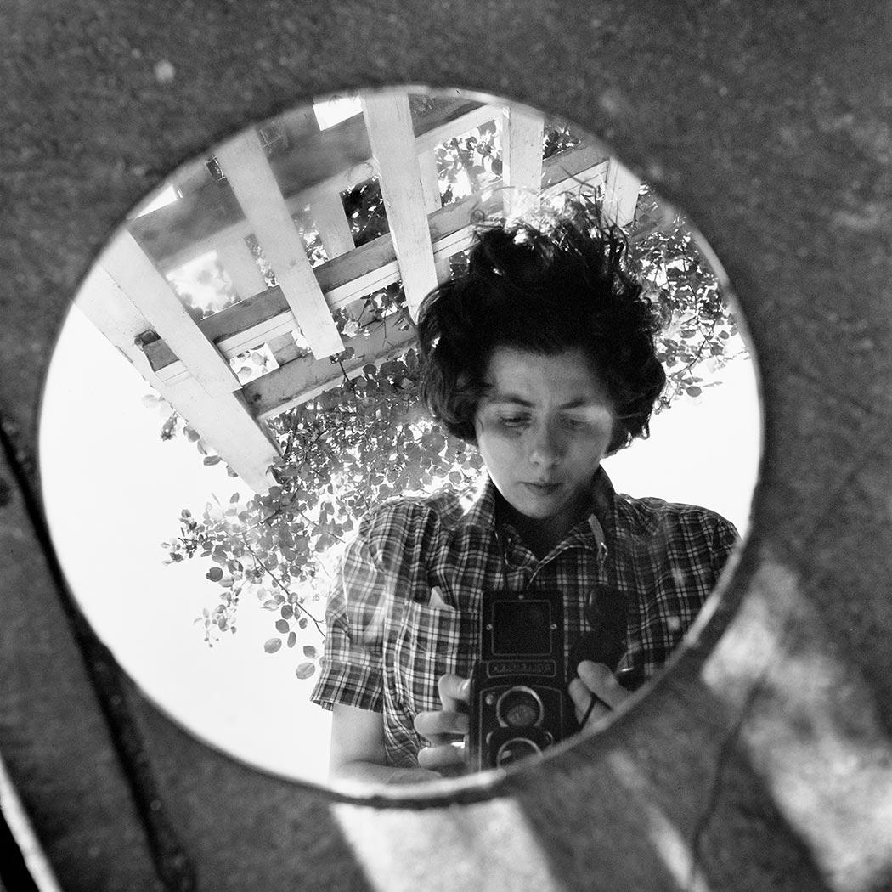

Vivian Maier
American Street Photographer
Vivian Maier was a photographer who not many people knew was a photographer until after her death in 2009. She was a quiet nanny who lived in New York City and Chicago. She is now well known for her black and white street photography.
Quick Facts:
- Born: February 1, 1926. Died: April 21, 2009 (aged 83).
- Vivian mainly used a Rolleiflex camera which can be seen in many of her self portraits.
- Her subjects ranged from reflections of herself to random people on the streets.
- She worked as a housekeeper for talk-show host Phil Donahue for a brief period in the 1970's.
- Her photos and negatives were discovered after being auctioned off at a storage space in Chicago.
- It is estimated that she produced over 150,000 negatives in her lifetime.